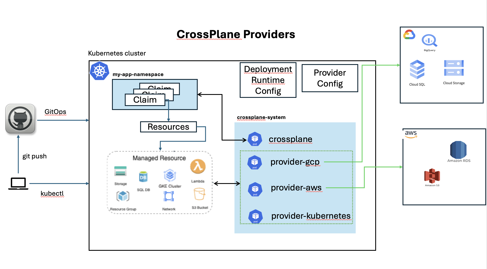

CrossPlane concepts
Important abstractions that are important to understand to fully grasp CrossPlane for automation and management of resources.
Provider
Providers enable Crossplane to provision infrastructure on an external service. Providers create new Kubernetes APIs and map them to external APIs.
Providers are responsible for all aspects of connecting to non-Kubernetes resources. This includes authentication, making external API calls and providing Kubernetes Controller logic for any external resources.
Examples of providers include:
- Provider AWS
- Provider Azure
- Provider GCP
- Provider Kubernetes
Providers define every external resource they can create in Kubernetes as a Kubernetes API endpoint. These endpoints are Managed Resources.
The following image depicts the relationship of Providers to CrossPlane controller, Resouces, Claims and Cloud platforms in which they provision and manage resources.

References:
Compositions
Compositions are a template for creating multiple managed resources as a single object.
A Composition composes individual managed resources together into a larger, reusable, solution.
An example Composition may combine a virtual machine, storage resources and networking policies. A Composition template links all these individual resources together.
References:
- Compositions: https://docs.crossplane.io/latest/concepts/compositions/
Composite Resource Definitions
Composite resource definitions (XRDs) define the schema for a custom API. Users create composite resources (XRs) and Claims (XCs) using the API schema defined by an XRD.
References:
- Composite Resource Definitions: [https://docs.crossplane.io/latest/concepts/composite-resource-definitions/]
Managed Resources
A managed resource (MR) represents an external service in a Provider. When users create a new managed resource, the Provider reacts by creating an external resource inside the Provider’s environment. Every external service managed by Crossplane maps to a managed resource.
Crossplane calls the object inside Kubernetes a managed resource and the external object inside the Provider an external resource.
References:
- Managed Resouces: https://docs.crossplane.io/latest/concepts/managed-resources/
Composite Resources
A composite resource represents a set of managed resources as a single Kubernetes object. Crossplane creates composite resources when users access a custom API, defined in the CompositeResourceDefinition.
Composite resources are a composite of managed resources. A Composition defines how to compose the managed resources together.
References:
- Composite Resources: https://docs.crossplane.io/latest/concepts/composite-resources/
Claims
Claims represents a set of managed resources as a single Kubernetes object, inside a namespace.
Users create claims when they access the custom API, defined in the CompositeResourceDefinition.
Claims are like composite resources. The difference between Claims and Composite Resources is Crossplane can create Claims in a namespace, while composite resources are cluster scoped.
Kubernetes scope
| CrossPlane Resource | K8S Scope |
|---|---|
| Provider | Namespace |
| Compositions | Cluster |
| Compositions | Cluster |
| Composite Resource Definitions | Cluster |
| Managed Resources | Cluster |
| Composite Resources | Cluster |
| Claim | Namespace |